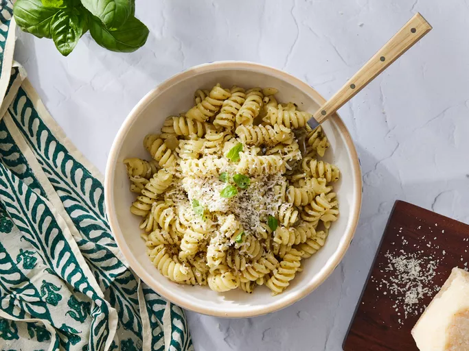

Pesto Pasta

Description
Pesto pasta is simple to make and full of flavor.
This recipe is perfect for busy weeknights and comes together in just 15 minutes.
Use any pasta, and add as much pesto sauce as you like.
Enjoy topped with plenty of Parmesan cheese.
Ingredients
- 1 (16 ounce) package pasta
- 2 tablespoons olive oil
- ½ cup chopped onion
- 2 ½ tablespoons pesto or more to taste
- salt to taste
- freshly ground black pepper to taste
- 2 tablespoons grated Parmesan cheese
Steps
- Gather all ingredients.
- Bring a large pot of lightly salted water to a boil. Cook pasta in the boiling water,
stirring occasionally, until tender yet firm to the bite, about 8 to 10 minutes.
Drain and set aside.
- Heat olive oil in a skillet over medium heat. Add chopped onion and cook until translucent, about 5 minutes.
- Stir in pesto, salt, and pepper. Add the cooked pasta and toss to coat evenly with the sauce.
- Serve topped with grated Parmesan cheese.